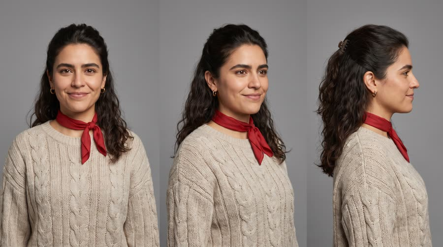
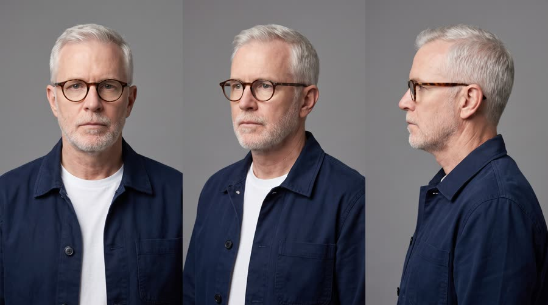
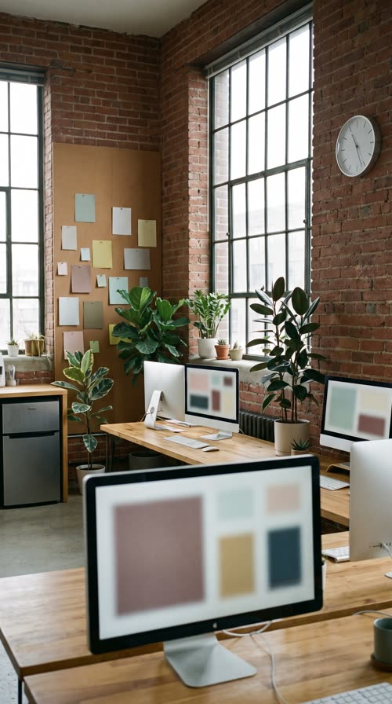

The 3pm Wall
At 3pm a designer's whole afternoon turns grey and slow motion, ten minutes before the client call. One can of Red Bull Sugarfree and the colour and speed come back.
Recognition before persuasion: the viewer sees their own bad moment and keeps watching to see it fixed. Longest-running format on Meta (median 68 days live) and repeatedly called the highest-performing cold-traffic format for DTC. It only works if the pain is specific and the fix is shown, not claimed, so the claims ceiling applies hard: the product solves only what the allowed claims say it solves.
Contact sheet
One keyframe per shot, with the caption as it will appear.


Cast and world

Voice: warm, wry, a little husky, American, talks to camera like a friend

Voice: dry, deadpan, New England, few words

World. Fieldnote Studio, a fictional small design studio in a converted brick loft in a North American city, a weekday afternoon. Long shared desks, big windows, plants, pinned-up paper mockups. Palette. Problem: everything desaturated to cool grey. Solution: sky blue and brushed silver from the can, warm window light, a red accent in Carmen's scarf and the pinned mockups.
Fictional brands. Fieldnote Studio (the design studio, a small line-drawn leaf mark on the glass door, added in post if legible); Harbor and Pine (the client, shown only as abstract colour blocks on screen)
Beats
| Time | Beat | What happens |
|---|---|---|
| 0-2.6 | hook | Carmen at her desk, the whole studio drained to grey, the clock at three. She names the pain to camera. |
| 2.6-7.6 | agitate | Slow motion: her cursor crawls, a sheet of paper hangs mid-fall, a coworker yawns forever. Walt reminds her the client call is in ten minutes. |
| 7.6-12.4 | hinge | She opens the grey studio fridge; the can is the only thing in full colour. She cracks it and colour spreads from the can up her arm. |
| 12.4-19 | solution | Colour and normal speed are back. She says the product line, then works fast: mockups snap together on screen. |
| 19-26 | payoff | Walt watches her present and approves in two words. A top and bottom split shows 3pm Carmen against 3:10pm Carmen. |
| 26-30 | cta | The can on her desk in warm afternoon light, tagline. |
Screenplay
37 spoken words in 30 s. Each line keeps its intent (fixed in the template) and its wording (written for this product).
| Time | Speaker | Line | Intent (template) |
|---|---|---|---|
| 0.4-2.5 | Carmen | Three p.m. My brain just left the building. flat, deadpan, to camera, one slow blink after | Hook: name the exact everyday pain, in the viewer's own words. |
| 3.2-5.0 | Carmen (off camera) | Every click takes a year. voiceover, slow and heavy, dragging the last word | Agitate: show how the pain makes a simple task feel impossible. |
| 5.6-7.2 | Walt | Client call in ten, Carmen. deadpan, leaning over the desk divider, in slow motion but the words at normal speed | Raise the stakes: a deadline arrives while the pain is at its worst. |
| 12.8-15.2 | Carmen | Red Bull Sugarfree. Sharp again, no sugar. bright, quick, a small grin, the can at chest height · Say: RED BULL SHUG-er-free, three clear words | Product line: name the product and the single benefit that ends this pain, using an allowed claim only. |
| 20.0-21.4 | Walt | Okay. That's the one. dry, the smallest nod, genuinely impressed | Payoff: someone else confirms the result, in as few words as possible. |
| 21.6-23.0 | Carmen | Not bad for three p.m. quiet, pleased, side glance to camera | Callback to the hook, the pain now defeated. |
| 27.0-29.4 | Carmen (off camera) | Wiiings without sugar. warm voiceover, unhurried, smiling · Say: WINGS, stretch the vowel slightly | Tagline in the brand's own words. |
Generation plan
U1 · 0 to 9.8 s · 10 s generation
Shots S01, S02, S03, S04 · References: carmen card, walt card, studio plate, S01 keyframe as first frame
9:16 commercial, the entire scene in desaturated black and white greyscale, flat overcast fluorescent light, visual slow motion on everything except speech. Shot 1 (0 to 2.6 s): locked medium close-up of @Image1 (Carmen) slumped at her desk, chin on her fist, a plain numberless wall clock at three behind her; flat and deadpan to camera: "Three p.m. My brain just left the building." Shot 2 (2.6 to 5 s): over-the-shoulder insert, her hand drags a stylus in slow motion, the monitor shows only grey blocks, a cold coffee with a skin; her voiceover, slow and heavy: "Every click takes a year." Shot 3 (5 to 7.6 s): medium wide, a sheet of paper drifting down in extreme slow motion, a coworker yawning endlessly, @Image2 (Walt) leans over the divider, deadpan: "Client call in ten, Carmen." Shot 4 (7.6 to 10 s): from inside a small fridge as Carmen opens it; everything is grey except one upright can in full sky-blue and silver colour on the middle shelf. Native sound: muffled room tone, slowed and pitched-down office sounds, a ticking clock, the fridge seal. No music. No text on screen, no numerals on the clock, no logos.
U2 · 9.8 to 15.4 s · 6 s generation · exact-risk (short, cheap to re-roll)
Shots S05, S06 · References: product can official, carmen card, S05 keyframe as first frame
9:16 commercial. Shot 1 (0 to 2.6 s): locked macro insert, a woman's hand holds the exact can from @Image1 upright, label to camera; her thumb cracks the tab and a soft wave of colour spreads outward from the can across her fingers and up her sleeve, turning the grey world back to full colour; the can itself never changes. Shot 2 (2.6 to 6 s): close-up of @Image2 (Carmen) at her desk, now in full warm colour with golden window light, she lowers the can from a sip to chest height with the label readable, sits up straight and says quickly with a grin: "Red Bull Sugarfree (said RED BULL SHUG-er-free, three clear words). Sharp again, no sugar." Keep the can's shape, colours, wordmark and bulls exactly as @Image1. Native sound: a crisp can crack as the first full-bandwidth sound, then the room tone snaps to normal speed. No music.
U3 · 15.4 to 26.2 s · 11 s generation
Shots S07, S08, S09 · References: carmen card, walt card, studio plate, S07 keyframe as first frame
9:16 commercial in full saturated colour, warm directional window light, energetic. Shot 1 (0 to 3.6 s): whip pan into a low wide, @Image1 (Carmen) rolls her chair to the monitor and works fast, stylus flying, abstract sky-blue, silver and red colour blocks snapping into a layout on screen, a sheet of paper lands on the desk, an open can stands beside the tablet. Shot 2 (3.6 to 7.8 s): slow arc, medium two-shot, she presents on a large wall screen with blank video-call tiles; @Image2 (Walt) stands behind her, arms folded, dry: "Okay. That's the one." Carmen, quiet, with a side glance to camera: "Not bad for three p.m." Shot 3 (7.8 to 10.8 s): a locked top and bottom split frame of the same woman at the same desk, top half grey and slumped, bottom half full colour and upright; hold still. Native sound: fast stylus taps, chair roll, a whoosh on the whip, dialogue. No music. No readable text on any screen.
U4 · 26.2 to 30 s · 5 s generation · exact-risk (short, cheap to re-roll)
Shots S10 · References: product can official, S10 keyframe as first frame
9:16 premium pack shot. Slow push-in on the exact can from @Image1 standing upright on a light wooden desk in a sunlit design studio, label to camera, cold droplets, warm golden rim light; behind it, out of focus, a drawing tablet, sky-blue and silver paper swatches, a plant and a numberless wall clock. The can does not move or change. Keep empty space above the can. Native sound: soft studio ambience. No music, no text.
Sound, music, voice, captions
| 0 to 10.4 s | problem | A heavy, detuned drone with a slowed tape-warble and a ticking clock, 60 bpm, low-passed, almost oppressive; leaves room for dialogue. |
| 10.4 to 26.2 s | solution | Starts exactly on the can crack: bright up-tempo indie pop groove, clean electric guitar and handclaps, 124 bpm, in A major, ducks under dialogue, a small lift on the split frame. |
| 26.2 to 30 s | cta | Same groove resolves on a warm held chord and a single glockenspiel note on the title. |
Added sound
- 10.3 s: crisp can crack and fizz, full bandwidth (the hinge of the whole format; it must sound like the world switching back on)
- 23.2 s: single bright chime (marks the before and after split so it reads as a comparison)
- Carmen: native voice in U1 (on-camera line and voiceover), then her U1 vocal stem as voice reference for U2, U3 and the U4 tagline voiceover
- Walt: native in U1; his U1 stem as reference for his U3 line
font: Archivo Black for problem words, Archivo SemiBold for the rest, size: 5.6% of frame height, color: #FFFFFF, active word: problem state: active word on a flat grey #6E6E6E chip; solution state: active word on a sky-blue #3BA4DC chip, shadow: none; words sit on chips for legibility on grey, box: rounded 6px chip behind the active word only, position: centre, 64% down the frame, above the platform UI safe zone, max words on screen: 3, problem captions motion: problem-state captions type on slowly, one word per 0.3 s, solution captions motion: solution-state captions pop on per word with a 4 frame scale bounce
Post text- 0 to 2.6 s: 3:00 PM / (Archivo Black, grey #6E6E6E chip, top left safe zone, types on letter by letter; replaces any clock numerals)
- 23.2 to 26.2 s: 3:00 PM / 3:10 PM / (two labels on the split frame: '3:00 PM' on a grey chip in the top half, '3:10 PM' on a sky-blue #3BA4DC chip in the bottom half, Archivo Black)
- 27.0 to 30 s: Red Bull Sugarfree / Wiiings without sugar (Archivo Black white with the sub in Archivo SemiBold, centred in the empty space above the can, pops on per word)
Adaptation contract
How this same concept takes any physical product.
| Product type | Where it sits in the story | Scale |
|---|---|---|
| ingested | she takes the can from the studio fridge, cracks it and drinks; colour floods out from the can | hand |
| applied | she applies it at the studio bathroom mirror (face mist, balm, eye cream) and colour spreads out from her fingertips | hand |
| worn | she puts it on at her desk (glasses, headphones, a jacket, shoes) and the colour starts from where it touches her | body |
| handheld | she picks it up from her desk drawer (a stylus, a mouse, earbuds, a tool) and the first click brings the colour back | hand |
| carried | she unzips it from under her desk (a bag, a case, an organiser) and colour pours out of it | hand to lap |
| home | it sits in her corner of the studio (a chair, a lamp, a desk riser, a plant light) and switching it on turns the corner back to colour | room |
| consumable | she tears open the refill or pack from the studio kitchen and colour spreads from the pack | hand |
Style bible
Look. Two visual states that never mix except at the hinge. PROBLEM state: desaturated to near-monochrome (10 to 15% saturation), cool grey, flat overcast light, heavy symmetrical frames with the subject small or slumped, objects visibly sagging or slowed (curling paper, drooping plant, cold drink with a skin). SOLUTION state: full saturation built from the product colours, warm key light, dynamic diagonal frames, the subject large and upright. THE HINGE: the product is the first object shown in full colour inside the grey world, and colour spreads outward from it. Close with a top and bottom before/after split frame so the change reads in one glance.
Camera. Problem: locked off or glacial push-ins on a long lens (85 to 135mm), frames centred and airless, visual slow motion (speed ramps to 30 to 40%) on everything except the speaker's mouth. Hinge: locked macro on the product, one rack focus. Solution: handheld energy, a whip pan or speed ramp back to 100% on the first action after the product, wider lenses (28 to 35mm), low angles that make the subject tall.
Light and texture. Problem: soft top-down fluorescent or overcast window light, no contrast, cool 6500K, no highlights in the eyes. Solution: warm directional key (3800K) from a window or practical, catchlights in the eyes, the product rim-lit as the brightest object. Clean digital, slightly soft in the problem state (a touch of diffusion and lifted blacks, like a tired eye), crisp and punchy in the solution state (true blacks, micro-contrast). No film grain gimmicks; the contrast between the two states is the texture.
Pacing. Hook in under 2 seconds: a specific pain named in words and shown in picture at once. Agitate for 5 to 7 seconds with slow, long shots that make the viewer feel the drag. The hinge is the one held beat (at least 1.5 s) on the product. After it, cutting doubles in speed. Payoff shows the pain's opposite, then a before/after split, then the CTA with a breath of stillness.
Sound. Problem: muffled, low-passed room tone, slowed and pitched-down office sounds (a yawn stretched, a keyboard clack dragging), a ticking clock. Hinge: the can crack is crisp and loud, the first full-bandwidth sound in the ad, and the room tone snaps back to normal speed on it. Solution: bright, full-range native sound. Score: a heavy, detuned drone in the problem, a bright up-tempo track that starts on the crack.
Known failures.
- the model tints the whole frame instead of leaving the world grey: say 'the entire scene is black and white greyscale except the can, which is in full true colour'
- the grey world makes the can grey too: name the can colours explicitly in every hinge prompt (sky blue, brushed silver, red wordmark, gold sun)
- colour-spread shots come back as a hard half-and-half cut: describe a soft gradient wave moving outward from the can
- before/after split frames come back as two different people: pass the character sheet and say 'the same woman in both halves, same clothes, same desk'
- monitors and whiteboards grow fake UI text: ask for abstract colour blocks and blank grey placeholder bars only
- wall clocks get readable numerals or fake brand names: ask for a plain clock face with hands and tick marks only, no numbers
- problem shots look merely sad instead of slowed: add a physical slow-motion cue (paper suspended mid-fall, coffee pouring in a frozen ribbon)
- office fridges fill with generic branded bottles: say the fridge holds only plain unlabelled grey food boxes and the one product can
- asking for 'a clean empty band for captions' renders a literal white bar across the frame: never ask for caption space in problem shots, captions sit on chips anyway
- a greyscale instruction placed late in a long prompt gets ignored and the frame comes back in colour: open the prompt with 'Black and white greyscale photograph, fully desaturated' and list the coloured items as grey
- 'medium close-up at her desk' comes back as a wide room shot with the monitor blocking her: say 'fills the frame from the top of her head to mid-chest, nothing between camera and her'
- 'just lowered from a sip' still renders the can at her lips, covering the mouth on a dialogue frame: say the can is lowered away from her face and her mouth is visible mid-word
Claims and cost
Claims used (all from the product page): Caffeine helps to improve concentration and increase alertness; Same benefits of the original Energy Drink, without sugar (tagline form)
Video estimate: 32 s of generation at $0.27/s = $8.64 first pass, $20 to 30 with retakes, plus about $1.5 music.